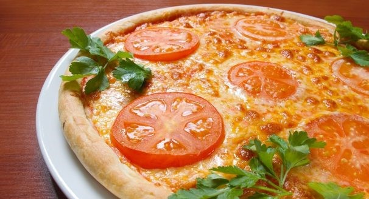

Время приготовления
40 минут
Ингридиенты
- Сыр твердый — 200 г
- Колбаса (салями) — 250 г
- Помидор — 1-2 шт
- Лук репчатый — 1 шт
- Перец болгарский — 1/2 шт
- Майонез (легкий) — 2-3 ст. л.
- Майоран (сушеный)
- Тесто дрожжевое
- Зелень
Энергетическая ценность
Каллорийность 358 ккал
Шаг 1:
ТЕСТО:
- Простокваша (или кефир)- 0,5 л
- Дрожжи - 2 ч. л. (развести в 1/2 стак. теплой подслащенной воды (1 ч. л. сахара))
- Масло растительное - 1/2 стак.
- Мука - добавить до мягкого теста
Этого теста хватит на 2-3 пиццы в зависимости от диаметра формы.Шаг 2:
Тонко разравнять тесто по форме, смазываем тесто майонезом.
Посыпаем сушеным майораном.Шаг 3:
Сыр трем на терке.Шаг 4:
После майонеза и майорана наносим толстый слой сыра.Шаг 5:
Режем дольками помидор.Шаг 6:
Так же режем салями.Шаг 7:
Выкладываем помидоры на расстоянии друг от друга.Шаг 8:
Выкладываем по принципу "чешуи" в порядке салями-помидор-лук. Очень важно, чтобы помидор был поверх лука.Шаг 9:
Посыпаем мелко нарезанным болгарским перцем.Шаг 10:
Затем вторая порция сыра.Шаг 11:
Выпекаем в разогретом духовом шкафу 25-30 минут.